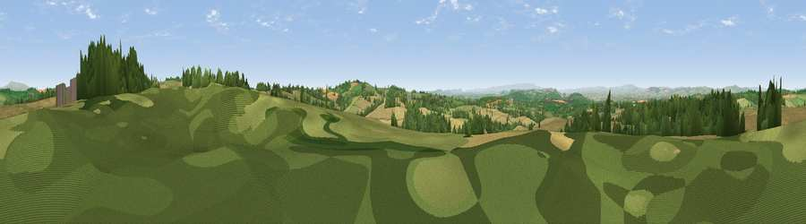

Viewpoint near Pudleston
#8976 in England · top 25% of its area beats it · near PudlestonWhere it is
The exact computed spot (SO 57412 56800). Click the marker for map links.
The view, rendered

A 360° render of this exact spot computed from the terrain model, tree cover and land cover — summer colours, afternoon light, calibrated against photographs of famous viewpoints. Real trees, hedges and buildings will differ in detail.
The panorama
Grey silhouette: terrain skyline in each direction (720 bearings, Earth curvature and refraction included). Dashed green: skyline with trees (+15 m) and buildings (+8 m) as obstacles. Blue strip: how far the ground is visible on each bearing.
Where the view opens
Wedge length = distance to the farthest visible ground on that bearing (vegetation-aware). Rings at 10, 25 and 50 km.
What fills the view
50% cropland · 27% grassland · 22% woodland ·
Angular shares of the visible panorama (visual magnitude), not map area. Landscape diversity 0.47 (0–1 Shannon).
Key numbers
More beautiful places nearby
The staircase of upgrades: each row has a higher view potential than everything closer. Driving times are estimates from straight-line distance, calibrated against real road routing — check an actual route before setting out.
| Place | Direction | Drive | Score |
|---|---|---|---|
| Viewpoint near Pencombe | SSE · 3 km | ~7 min | 72.8 |
| Viewpoint near Westhope | WSW · 13 km | ~23 min | 77.0 |
| Viewpoint near Yarpole | NW · 16 km | ~28 min | 78.1 |
| Gatley Hill | NW · 18 km | ~31 min | 82.6 |
| Viewpoint near Great Witley | ENE · 19 km | ~33 min | 83.4 |
| Titterstone Clee | N · 21 km | ~36 min | 83.8 |
| North Hill | ESE · 22 km | ~37 min | 86.8 |
| Worcestershire Beacon | ESE · 23 km | ~37 min | 87.1 |
52.20777, -2.62464 · source: screening · position refined by local search. Computed location — check access rights before visiting.